본 포스트는 서울대학교 Chenglin Fan 교수님의 4190.407 Algorithms (Design and Analysis of Algorithms) 강의 자료(14강 Greedy algorithms!, 총 107장)를 바탕으로, 강의를 처음 듣는 독자도 논리적 흐름을 따라갈 수 있도록 재구성한 것입니다. 1강 표지에 “Part of Slides Borrowed From Mary Wootters”라고 밝혀 두었듯 이 시리즈의 슬라이드는 상당 부분 Stanford의 Mary Wootters 교수님 자료에서 가져온 것입니다. 본문의 대섹션 구분은 3번째 슬라이드의 Today가 세워 둔 흐름 — 통하지 않는 예 하나(Knapsack again)와 통하는 예 셋(Activity Selection, Job Scheduling, Huffman Coding) — 을 따르고, 105–106번째 슬라이드의 Recap I·Recap II로 맺었습니다. 수업에서 건너뛰었다고 표시된 102번째 슬라이드도 함께 다룹니다.
한 줄 요약 (TL;DR)
“탐욕 알고리즘은 한 번 고른 것을 되돌리지 않으므로, 매 선택이 최적해를 배제하지 않는다는 것을 보여야 비로소 옳다고 말할 수 있습니다.”
지난 두 강의의 동적 계획법이 여러 부분 문제를 모두 풀어 표에 담았다면, 탐욕 알고리즘은 지금 가장 좋아 보이는 선택 하나에 걸고 나아가며 그 결과가 전역 최적이기를 바랍니다. 그 바람은 틀릴 수 있습니다. 무제한 배낭에서 가치/무게 비율이 가장 좋은 타코만 담으면 가치 39에 그쳐 최적 42에 못 미칩니다. 반면 활동 선택에서는 가장 일찍 끝나는 활동부터 고르는 규칙이 정렬 한 번(\(O(n \log n)\))으로 최적해를 주고, 작업 스케줄링에서는 이웃한 두 작업을 비교해 얻은 ‘지연 비용/소요 시간’ 비율이 큰 작업부터 하는 정렬이 최적 순서를 줍니다. 허프만 부호화에서는 빈도가 가장 낮은 두 노드를 거듭 합치는 규칙이 예제에서 글자당 기대 2.24비트(고정 길이 부호는 3비트)의 최적 부호를 만듭니다. 세 증명은 모두 최적해를 탐욕적 선택과 일치하도록 바꿔 넣어도 나빠지지 않는다는 같은 틀을 따르고, 세 문제 모두 각 문제가 부분 문제 하나에만 의존하는 아주 좋은 최적 부분 구조를 가집니다. 이것이 탐욕 알고리즘이 통하는 조건입니다.
1. 탐욕 알고리즘 (Greedy Algorithms)
두 번째 슬라이드는 탐욕 알고리즘(greedy algorithm)을 세 줄로 요약합니다.
- 한 번에 하나씩 선택합니다(make choices one-at-a-time).
- 절대 뒤를 돌아보지 않습니다(never look back). 한 번 내린 선택은 번복하지 않습니다.
- 최선을 바랍니다(hope for the best). 매 순간의 선택이 모여 전체적으로도 가장 좋은 답이 되기를 기대합니다.
지난 두 강의(12–13강)의 동적 계획법과 나란히 놓으면 차이가 분명합니다.
- 동적 계획법은 최적해가 어느 부분 문제에서 오는지 모르기 때문에, 후보가 되는 부분 문제를 모두 풀어 표에 담고 그중 가장 좋은 것을 고릅니다.
- 탐욕 알고리즘은 지금 당장 가장 좋아 보이는 선택 하나에 곧바로 걸고, 나머지 가능성은 다시 보지 않습니다.
그래서 탐욕 알고리즘은 대개 빠르고 쓰기 쉽습니다. 대신 그 선택들이 정말 최적해로 이어지는지는 따로 증명해야 하며, 이번 강의의 중심이 바로 그 증명입니다.
2. 개요 (Today)
- 통하지 않는 탐욕 알고리즘의 예 하나: 배낭 문제를 다시 봅니다(Knapsack again).
- 통하는 탐욕 알고리즘의 예 셋:
- 활동 선택(activity selection)
- 작업 스케줄링(job scheduling)
- 허프만 부호화(Huffman coding) — 시간이 되면 다룹니다.
슬라이드의 파란 메모는 이 예들을 강의 전 연습 문제(pre-lecture exercise)에서 이미 보았다고 짚어 둡니다.
3. 통하지 않는 예: 무제한 배낭 (Non-example: Unbounded Knapsack)
탐욕 알고리즘이 늘 통하지는 않는다는 것부터 확인합니다. 13강에서 동적 계획법으로 푼 무제한 배낭(unbounded knapsack) 문제를 다시 가져옵니다.
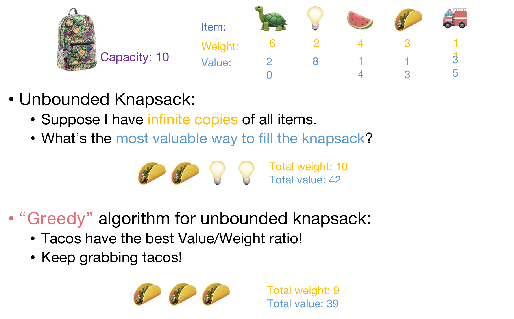
- 문제: 모든 물건을 무한히 가지고 있을 때, 용량 10인 배낭을 가장 값지게 채우는 방법은 무엇일까요?
- 최적해: 13강의 동적 계획법이 찾은 답은 타코 둘과 전구 둘로, 총무게 10, 총가치 42입니다.
물건마다 무게 1당 가치를 계산하면 다음과 같습니다.
| 물건 | 거북이 | 전구 | 수박 | 타코 | 소방차 |
|---|---|---|---|---|---|
| 무게 \(w_i\) | 6 | 2 | 4 | 3 | 11 |
| 가치 \(v_i\) | 20 | 8 | 14 | 13 | 35 |
| 가치/무게 | 3.33 | 4 | 3.5 | 4.33 | 3.18 |
슬라이드가 따옴표를 쳐서 부르는 “탐욕” 알고리즘은 이렇습니다.
- 타코의 가치/무게 비율이 가장 좋습니다!
- 그러니 계속 타코를 집습니다!
타코를 셋 넣으면 무게 9, 가치 39입니다. 남은 용량은 1인데 가장 가벼운 전구도 무게가 2이므로 더 넣을 것이 없습니다. 결과 39는 최적 42보다 작습니다.
무엇이 잘못되었는지는 최적해를 보면 드러납니다. 최적해는 비율이 조금 낮은 전구(4)를 섞어 \(3 \cdot 2 + 2 \cdot 2 = 10\)으로 용량을 빈틈없이 채우고, \(13 \cdot 2 + 8 \cdot 2 = 42\)를 얻습니다. 가치/무게 비율은 무게 1당 얼마를 버는지만 알려 줄 뿐, 그 선택 때문에 나중에 남는 용량이 버려지는 효과는 따지지 않습니다. 지금 가장 좋아 보이는 선택이 나중의 선택지를 망칠 수 있다는 것이 이 반례의 교훈이며, 106번째 슬라이드(Recap II)에서 “자연스러운 탐욕 알고리즘이 늘 옳지는 않다”는 문장으로 다시 등장합니다.
4. 활동 선택 (Activity Selection)
4.1 문제 (Activity Selection)
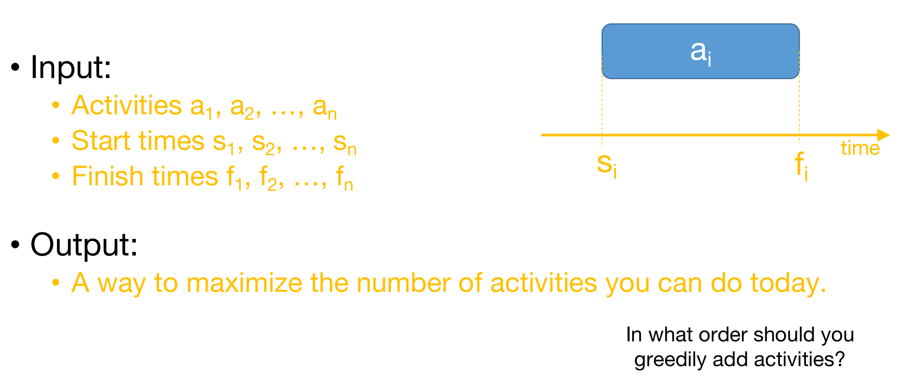
- 입력: 활동 \(a_1, a_2, \ldots, a_n\)과 각 활동의 시작 시각 \(s_1, \ldots, s_n\), 끝나는 시각 \(f_1, \ldots, f_n\).
- 출력: 오늘 할 수 있는 활동의 수를 최대로 만드는 방법, 곧 서로 겹치지 않는 활동들의 가장 큰 집합.
\[ \max_{S \subseteq \{1, \ldots, n\}} |S| \quad \text{subject to} \quad f_i \le s_j \ \text{ or } \ f_j \le s_i \quad \text{for all } i \ne j \in S \]
슬라이드는 한 활동이 끝나는 바로 그 시각에 다른 활동이 시작하는 경우를 따로 말하지 않습니다. 여기서는 CLRS처럼 이런 두 활동은 겹치지 않는다고 봅니다.
탐욕 알고리즘의 모양은 거의 정해져 있습니다. 활동을 어떤 기준으로 줄 세운 뒤, 앞에서부터 지금까지 고른 활동과 겹치지 않으면 넣는 일을 반복하는 것입니다. 남은 질문은 슬라이드 오른쪽 아래의 물음, 어떤 순서로 더해야 하느냐입니다.
4.2 어떤 순서로 더할까요 (In What Order Should You Greedily Add Activities?)
슬라이드는 후보 기준 셋을 차례로 시험합니다.
가장 짧은 활동부터? (Shortest Job First?)
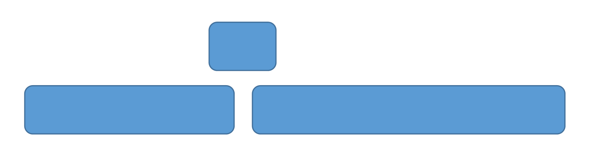
짧은 활동은 시간을 적게 차지하니 그럴듯해 보입니다. 하지만 슬라이드의 그림처럼 짧은 활동 하나가 긴 활동 두 개 사이의 틈에 걸쳐 있으면, 짧은 것을 고르는 순간 두 긴 활동이 모두 막혀 하나밖에 하지 못합니다. 최적은 두 긴 활동을 고르는 것으로 둘입니다.
충돌이 가장 적은 활동부터? (Fewest Conflicts First?)
슬라이드는 붉은 물음표 네 개(????)만 띄워 둡니다. 다른 활동과 덜 겹치는 활동이 더 “무해”해 보이지만, 이 규칙에도 반례가 있습니다. 아래는 이 포스트에서 직접 구성해 전수 확인한 예로, 슬라이드에는 없습니다.
| 활동 | 구간 \([s, f)\) | 겹치는 활동 수 |
|---|---|---|
| \(T_1\) | \([0, 2)\) | 3 |
| \(T_2\) | \([3, 5)\) | 4 |
| \(T_3\) | \([6, 8)\) | 4 |
| \(T_4\) | \([9, 11)\) | 3 |
| \(M_1\) (같은 구간 3개) | \([1.5, 3.5)\) | 각 4 |
| \(M_2\) | \([4.5, 6.5)\) | 2 |
| \(M_3\) (같은 구간 3개) | \([7.5, 9.5)\) | 각 4 |
- 충돌이 가장 적은 활동은 \(M_2\)이므로 먼저 고릅니다. 그러면 \(M_2\)와 겹치는 \(T_2\), \(T_3\)가 빠집니다.
- 남은 활동 가운데 \(T_1\)과 세 \(M_1\)은 서로 모두 겹치므로 하나만, \(T_4\)와 세 \(M_3\)도 하나만 고를 수 있습니다. 어떻게 고르든 모두 3개입니다.
- 하지만 \(T_1, T_2, T_3, T_4\)는 서로 겹치지 않으므로 최적은 4개입니다.
가장 일찍 끝나는 활동부터? (Earliest Ending Time First?)
슬라이드의 답은 “이게 됩니다(This will do it!)”입니다. 일찍 끝나는 활동은 남은 하루를 가장 많이 남겨 둔다는 것이 직관이고, 이것이 실제로 최적해를 준다는 것을 4.7–4.9에서 증명합니다.
4.3 탐욕 알고리즘 (Greedy Algorithm)
- 지금 추가할 수 있는 활동 가운데 끝나는 시각이 가장 이른 것을 고릅니다.
- 반복합니다.
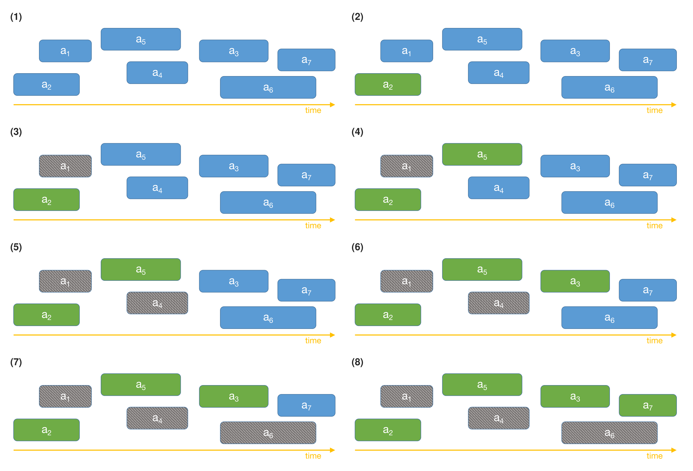
슬라이드의 막대 좌표를 읽어 보면 일곱 활동이 끝나는 순서는 \(a_2, a_1, a_5, a_4, a_3, a_6, a_7\)이고, 여덟 장면은 정확히 이 순서대로 활동을 하나씩 살펴봅니다.
| 장면 | 살펴보는 활동 | 판단 |
|---|---|---|
| (2) | \(a_2\) | 가장 일찍 끝남 → 선택 |
| (3) | \(a_1\) | \(a_2\)가 끝나기 전에 시작 → 배제 |
| (4) | \(a_5\) | \(a_2\)가 끝난 뒤 시작 → 선택 |
| (5) | \(a_4\) | \(a_5\)가 끝나기 전에 시작 → 배제 |
| (6) | \(a_3\) | \(a_5\)가 끝난 뒤 시작 → 선택 |
| (7) | \(a_6\) | \(a_3\)가 끝나기 전에 시작 → 배제 |
| (8) | \(a_7\) | \(a_3\)가 끝난 뒤 시작 → 선택 |
답은 \(\{a_2, a_5, a_3, a_7\}\)의 네 활동입니다. 일곱 활동의 모든 부분집합을 확인해 보면 다섯 개 이상을 고를 방법은 없으므로 4가 최적입니다. 다만 최적해가 하나뿐인 것은 아닙니다. \(a_2\) 대신 \(a_1\)을, \(a_5\) 대신 \(a_4\)를 써도 되어 네 활동짜리 최적해가 \(2 \times 2 = 4\)가지 있습니다. 뒤의 증명이 “어떤 최적해”라는 표현을 쓰는 이유가 여기에 있습니다.
4.4 적어도 빠릅니다 (At Least It’s Fast)
- 수행 시간
- 활동들이 이미 끝나는 시각 순으로 정렬되어 있으면 \(O(n)\)입니다.
- 그렇지 않으면 먼저 정렬해야 하므로 \(O(n \log n)\)입니다.
정렬된 뒤에 한 번 훑는 데 \(O(n)\)이면 충분한 이유는, 새 활동마다 마지막으로 고른 활동의 끝나는 시각 \(f_{\text{last}}\) 하나와만 비교하면 되기 때문입니다.
- 고른 활동들은 끝나는 시각 순으로 쌓이므로 마지막 활동이 가장 늦게 끝납니다. 새 활동이 \(s \ge f_{\text{last}}\)이면 고른 모든 활동이 끝난 뒤에 시작하므로 어느 것과도 겹치지 않습니다.
- 거꾸로 \(s < f_{\text{last}}\)이면, 정렬 순서 때문에 새 활동은 \(f_{\text{last}}\) 이후에 끝나므로 마지막 활동과 겹칩니다.
제목의 “적어도(at least)”에는 이 알고리즘이 옳은지는 아직 따지지 않았다는 뜻이 담겨 있습니다.
4.5 무엇이 탐욕적일까요 (What Makes It Greedy?)
- 알고리즘의 각 단계에서 선택을 합니다.
- “이봐, 활동 집합을 하나 늘릴 수 있고,”
- “앞으로의 선택을 위한 여지도 많이 남기니까,”
- “그렇게 하고 최선을 바라자!!!”
- 하루가 끝났을 때 이것이 전역 최적해(globally optimal solution)가 되기를 바랍니다(hope).
가장 일찍 끝나는 활동이 앞으로의 여지를 가장 많이 남긴다는 것은 지금 이 순간만 보는 지역적(local) 판단입니다. 탐욕 알고리즘에서 늘 따져야 할 질문은 이런 지역적 판단을 이어 붙인 결과가 전역적(global)으로도 최적이냐는 것입니다.
4.6 세 가지 질문 (Three Questions)
- 활동 선택의 이 탐욕 알고리즘은 통할까요?
- 네. (왜인지는 곧 봅니다.)
- 일반적으로 탐욕 알고리즘은 언제 좋은 생각일까요?
- 문제가 특히 좋은 최적 부분 구조(especially nice optimal substructure)를 보일 때입니다.
- “탐욕” 접근은 대개 가장 먼저 떠올리는 방법인데, 왜 8주차인 지금에서야 다룰까요?
- 탐욕 알고리즘이 통한다는 것을 증명하기가 대개 쉽지 않기 때문입니다.
이후 슬라이드는 이 세 질문에 체크 표시를 하나씩 붙여 가며 진행합니다. 4.7–4.9가 질문 1, 4.10이 질문 3, 4.11–4.12가 질문 2에 답합니다.
4.7 왜 통할까요 (Why Does It Work?)
슬라이드는 앞의 예제 그림으로 돌아가(Back to Activity Selection) 증명의 핵심 문장을 내놓습니다.
- 선택을 할 때마다, 우리는 최적해를 배제하지 않습니다(we don’t rule out an optimal solution).
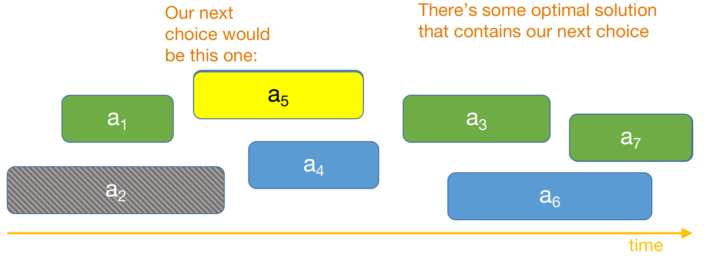
이 문장을 받아들이면 결론은 바로 나옵니다(Assuming that statement…).
- 우리는 최적해를 결코 배제하지 않습니다.
- 알고리즘이 끝나면 우리는 어떤 해를 가지고 있습니다.
- 그러므로 그 해는 최적이어야 합니다.
결국 증명해야 할 것은 첫 문장 하나입니다.
4.8 최적해를 결코 배제하지 않습니다 (We Never Rule Out an Optimal Solution)
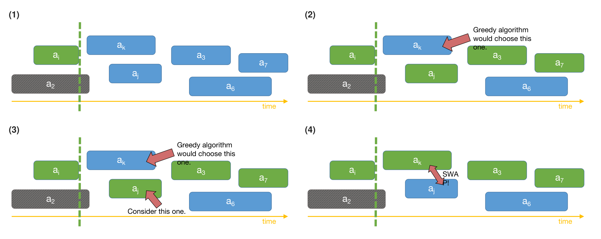
가정 (Suppose)
- 이미 \(a_i\)까지 골랐고, 지금까지의 선택을 확장하는(extends) 최적해 \(T^*\)가 여전히 있다고 합시다. “확장한다”는 것은 \(T^*\)가 지금까지 고른 활동을 모두 포함한다는 뜻입니다.
- 이제 우리가 내릴 다음 선택을 \(a_k\)라 합시다. \(a_k\)는 \(a_i\)가 끝난 뒤 시작하는 활동 가운데 끝나는 시각이 가장 이른 것입니다.
두 경우 (Two Cases)
경우 1: \(a_k \in T^*\)
- 그러면 여전히 궤도 위에 있습니다(still on track). \(T^*\)가 다음 선택까지 확장하는 최적해입니다.
경우 2: \(a_k \notin T^*\)
- \(a_j\)를 \(a_i\)가 끝난 뒤에 있는 \(T^*\)의 활동 가운데 끝나는 시각이 가장 이른 활동이라 합시다. 슬라이드는 처음에 “\(T^*\)에서 끝나는 시각이 가장 이른 활동”이라고 썼다가, 다음 장에서 “(\(a_i\)가 끝난 뒤)”라는 단서를 덧붙입니다.
- \(T^*\)에서 \(a_j\)를 빼고 \(a_k\)를 넣은 일정을 \(T\)라 합시다(SWAP!).
\[ T = \bigl(T^* \setminus \{a_j\}\bigr) \cup \{a_k\} \]
- \(T\)는 여전히 허용되는 일정입니다(still allowed).
- \(a_k\)는 끝나는 시각이 가장 이르므로 \(a_j\)보다 먼저(늦어도 같은 시각에) 끝납니다.
- 따라서 \(a_k\)는 \(a_j\) 다음에 고른 어떤 활동과도 겹치지 않습니다.
- \(T\)는 여전히 최적입니다(still optimal). 활동 수가 \(T^*\)와 같기 때문입니다.
슬라이드가 한 줄씩으로 넘어간 부분을 조금 더 채우면 다음과 같습니다.
- \(a_j\)는 반드시 있습니다. \(T^*\)에서 이미 고른 활동이 아닌 것들은 모두 \(a_i\)가 끝난 뒤에 시작합니다. 고른 활동들 사이에 끼어들 수 있는 활동이 있었다면 탐욕 알고리즘이 그것을 먼저 골랐을 것이기 때문입니다. 그런데 \(a_i\) 뒤에 \(T^*\)의 활동이 하나도 없다면, \(T^*\)에 \(a_k\)를 더해도 겹치는 것이 없어 \(T^*\)가 최적이라는 데 모순입니다.
- \(a_k\)는 \(T\)의 나머지와 겹치지 않습니다.
- 이미 고른 활동들은 모두 \(a_i\)가 끝날 때까지 끝나고, \(a_k\)는 그 뒤에 시작합니다.
- \(a_j\) 말고 \(a_i\) 뒤에 있는 \(T^*\)의 활동 \(b\)는 \(a_j\)와 겹치지 않으면서 \(a_j\)보다 늦게 끝나므로, \(a_j\)가 끝난 뒤에 시작합니다. \(a_j\)도 \(a_i\) 뒤에 시작하는 후보이므로 \(f_k \le f_j\)이고, 따라서 \(f_k \le f_j \le s_b\)입니다.
- \(T\)는 지금까지의 선택과 \(a_k\)를 모두 포함합니다. 빼낸 \(a_j\)는 우리가 고른 활동이 아니기 때문입니다.
지금까지의 선택을 확장하는 최적해가 있었다면, 다음 탐욕적 선택 \(a_k\)까지 포함하는 최적 일정도 있습니다. \(T^*\)가 \(a_k\)를 이미 담고 있으면 \(T^*\) 자체가, 담고 있지 않으면 \(T^*\)에서 \(a_i\) 뒤에 있는 활동 가운데 가장 일찍 끝나는 \(a_j\)를 \(a_k\)로 바꾼 \(T\)가 그 일정입니다.
4.9 그러므로 알고리즘은 옳습니다 (So the Algorithm Is Correct)
4.7의 세 줄 논증을 귀납법으로 다시 쓰면 다음과 같습니다.
- 귀납 가정(inductive hypothesis): \(t\)번째 활동을 넣은 뒤에도 현재 해를 확장하는 최적해가 있습니다.
- 기저 사례(base case): 활동을 하나도 넣지 않았을 때, 빈 해를 확장하는 최적해가 있습니다. 어떤 최적해든 빈 집합을 포함하므로 당연합니다.
- 귀납 단계(inductive step): 방금 4.8에서 한 일입니다!
- 결론(conclusion)
- 마지막 활동을 넣은 뒤에도 현재 해를 확장하는 최적해가 있습니다.
- 그런데 현재 해를 확장하는 해는 현재 해뿐입니다.
- 그러므로 현재 해는 최적입니다.
결론의 둘째 줄은 알고리즘이 멈추는 방식에서 나옵니다. 알고리즘이 끝났을 때 고르지 않은 활동은 모두 이미 고른 활동과 겹쳐 배제된 것들입니다. 따라서 현재 해에 활동을 하나라도 더한 일정은 허용되지 않고, 현재 해를 포함하는 해는 현재 해 자신뿐입니다.
4.10 흔한 증명 전략 (One Common Strategy)
세 질문 슬라이드가 다시 나와 질문 1에 체크를 하고, 이번에는 화살표로 질문 3을 가리킵니다. 탐욕 알고리즘의 증명은 쉽지 않지만, 방금의 증명에는 다른 문제에도 자주 통하는 틀이 들어 있습니다.
탐욕 알고리즘을 위한 흔한 전략
- 일련의 선택(series of choices)을 합니다.
- 각 단계에서 우리의 선택이 결국 최적해를 배제하지 않는다(won’t rule out an optimal solution)는 것을 보입니다.
- 모든 선택을 마친 뒤에도 최적해를 배제하지 않았으므로, 최적해를 찾은 것이 틀림없습니다.
슬라이드는 같은 전략을 귀납법의 형식으로 다시 적습니다.
여기서 성공(success)은 최적해를 찾는 것을 뜻합니다.
- 귀납 가정: 탐욕적 선택 \(t\) 이후에도 성공을 배제하지 않았습니다.
- 기저 사례: 아무 선택도 하기 전에는 성공이 가능합니다.
- 귀납 단계: 선택 \(t\) 이후 성공을 배제하지 않았다면, 선택 \(t+1\) 이후에도 성공을 배제하지 않습니다.
- 결론: 알고리즘의 끝에 도달했는데 성공을 배제하지 않았다면, 성공한 것입니다.
어려운 부분은 귀납 단계이고, 슬라이드는 그것을 보이는 흔한 전략도 정리합니다.
- 최적해 \(T^*\)를 만드는 궤도 위에 있다고 가정합니다.
- 예: 활동 \(i\)를 고른 뒤에도 여전히 궤도 위에 있습니다.
- \(T^*\)가 다음 탐욕적 선택과 다르다고 가정합니다.
- 예: \(T^*\)에 활동 \(k\)가 들어 있지 않습니다.
- \(T^*\)를 조작해, 더 나쁘지 않으면서 탐욕적 선택과 일치하는 해 \(T\)를 만듭니다.
- 예: \(T^*\)가 다음에 고른 활동을 활동 \(k\)와 맞바꿉니다.
교과서에서는 이렇게 최적해의 일부를 탐욕적 선택으로 바꿔 넣는 논증을 흔히 교환 논법(exchange argument)이라 부릅니다. 뒤의 두 예제인 작업 스케줄링과 허프만 부호화도 같은 틀로 증명됩니다.
슬라이드는 단서도 하나 붙입니다(Note on “Common Strategy”).
- 이 흔한 전략이 탐욕 알고리즘의 정당성을 증명하는 유일한 방법은 아닙니다!
- 강의에서 이것을 강조하는 이유는 자주 통하고, 시작할 틀을 주기 때문입니다.
4.11 탐욕 알고리즘의 최적 부분 구조 (Optimal Sub-structure in Greedy Algorithms)
세 질문 슬라이드가 한 번 더 나와 질문 1과 3에 체크를 하고, 화살표로 질문 2를 가리킵니다. 탐욕 알고리즘은 언제 좋은 생각일까요?
- 활동 선택의 탐욕 알고리즘은 자연스러운 부분 문제 구조를 활용했습니다. \(A[i]\)를 활동 \(i\)가 끝난 뒤에 할 수 있는 활동의 (최대) 수로 두면, \(A[i]\)는 \(a_i\)의 끝 이후라는 부분 문제의 답입니다.
- 이 부분 구조는 분할 정복이나 동적 계획법의 부분 구조와 어떤 관계일까요?
부분 문제 그래프로 보기 (Sub-problem Graph View)
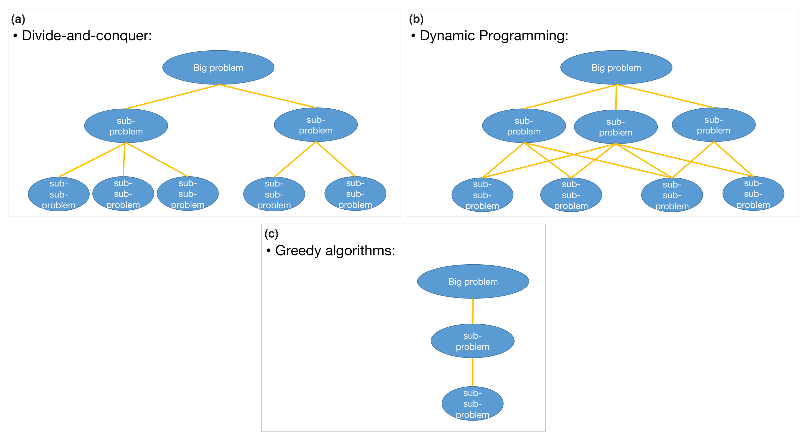
문제를 노드로, “이 문제를 풀려면 저 부분 문제의 답이 필요하다”를 선으로 그리면 세 패러다임이 서로 다른 모양이 됩니다.
| 패러다임 | 그래프 모양 | 의미 |
|---|---|---|
| 분할 정복 | 트리 | 부분 문제들이 서로 겹치지 않으므로, 각 부분 문제를 한 번씩만 풉니다 |
| 동적 계획법 | 겹치는 그래프 | 같은 부분 문제를 여러 문제가 쓰므로, 답을 표에 기억해 두면 이득입니다 |
| 탐욕 알고리즘 | 사슬 | 각 문제가 부분 문제 하나에만 의존하므로, 표 없이 앞으로만 나아가면 됩니다 |
슬라이드의 말로 정리하면, 탐욕 알고리즘이 통하는 문제에는
- 최적 부분 구조가 있을 뿐 아니라, 곧 문제의 최적해가 부분 문제들의 최적해로 이루어질 뿐 아니라,
- 각 문제가 부분 문제 하나에만 의존합니다.
같은 슬라이드의 작은 메모는 활동 선택의 동적 계획법 버전(표를 채우는 버전)을 직접 써 보라고 권하고, 한 가지 방법이 .pptx 파일의 숨겨진 슬라이드에 있다고 적습니다. 이 PDF에서는 그 숨겨진 슬라이드를 볼 수 없습니다. 대신 다음 절에서 슬라이드가 하향식 버전을 직접 보여 줍니다.
4.12 더 자세히: 탐욕 대 동적 계획법 (More Detail: Greedy vs. DP)
슬라이드는 먼저 단서를 답니다. 교육 목적일 뿐입니다!(Just for pedagogy!) 활동 선택을 생각하는 가장 좋은 방법은 아닙니다. 탐욕 알고리즘과 동적 계획법의 관계를 보이려고, 13강의 다섯 단계 레시피를 활동 선택에 그대로 적용해 봅니다.
1단계: 최적 부분 구조 (Optimal Substructure)
- 부분 문제 \(i\): \(A[i]\) = 활동 \(i\)가 끝난 뒤에 할 수 있는 활동의 수.
그림 캡션에서는 대괄호를 쓸 수 없어 \(A[i]\), \(A[k]\)를 A(i), A(k)처럼 소괄호로 적었습니다.
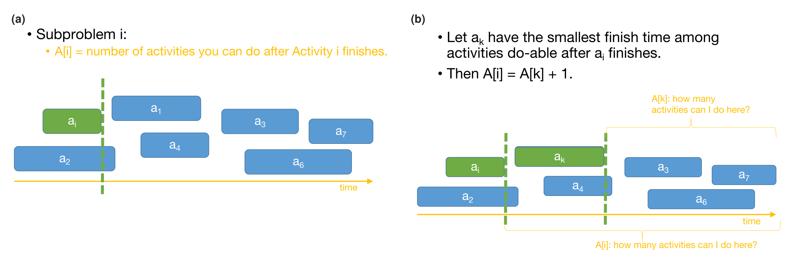
2단계: 재귀식 — 이미 한 일입니다 (We Did That Already)
- \(a_k\)를 \(a_i\)가 끝난 뒤 할 수 있는 활동 가운데 끝나는 시각이 가장 이른 것이라 합시다.
- 그러면 \(A[i] = A[k] + 1\)입니다.
할 수 있는 활동이 없는 경우까지 넣어 쓰면 다음과 같습니다.
\[ A[i] = \begin{cases} 0 & \text{if no activity starts after } a_i \text{ finishes} \\[2pt] A[k] + 1 & \text{otherwise, where } k = \displaystyle\operatorname*{arg\,min}_{j \,:\, s_j \ge f_i} f_j \end{cases} \]
슬라이드 제목이 “이미 한 일”인 것은, 이 등식의 근거가 4.8의 교환 논증이기 때문입니다.
- \(A[i] \ge A[k] + 1\): \(a_k\) 하나 뒤에 \(a_k\)가 끝난 뒤의 최적 일정(\(A[k]\)개)을 붙이면, \(a_i\)가 끝난 뒤에 할 수 있는 \(A[k] + 1\)개짜리 일정이 됩니다.
- \(A[i] \le A[k] + 1\): 4.8의 논증을 “\(a_i\) 이후”라는 부분 문제에 그대로 적용하면, \(a_i\) 이후의 최적 일정 가운데 \(a_k\)로 시작하는 것이 있습니다. 그 일정에서 \(a_k\)를 뺀 나머지는 모두 \(a_k\)가 끝난 뒤의 활동이므로 많아야 \(A[k]\)개입니다.
3단계: 하향식 동적 계획법 (Top-down DP)
Initialize a global array A to [None, …, None]
Make a "dummy" activity that ends at time -1. # 활동 0
def findNumActivities(i):
If A[i] != None:
Return A[i] # 이미 푼 부분 문제
# (강조) 재귀식의 k
Let Activity k be the activity I can fit in my schedule
after Activity i with the smallest finish time.
If there is no such activity k, set A[i] = 0
# (강조) 재귀식 A[i] = A[k] + 1
Else, A[i] = findNumActivities(k) + 1
Return A[i]
Return findNumActivities(0)- 가짜(dummy) 활동 0은 시각 \(-1\)에 끝납니다. 모든 활동이 시각 0 이후에 시작한다고 보면 모든 활동을 그 뒤에 할 수 있으므로, \(A[0]\)이 원래 문제의 답입니다.
- 슬라이드의 주황 메모는 “이건 끔찍한 작성 방식입니다! 여기서 중요한 것은 강조된 줄들이 우리의 재귀식이라는 점뿐입니다.”라고 말합니다. 강조된 줄은 \(k\)를 찾는 줄과 \(A[i] = A[k] + 1\)을 계산하는 줄로, 위 코드에서 (강조) 주석을 붙인 두 곳입니다.
4단계: 실제 해 찾기 (Next 배열)
실제 일정을 얻으려면 \(A[i]\)가 어느 \(k\)에서 왔는지를 배열 Next에 함께 기록합니다.
Initialize a global array A to [None, …, None]
Initialize a global array Next to [None, …, None] # 추가
Make a "dummy" activity that ends at time -1.
def findNumActivities(i):
If A[i] != None:
Return A[i]
Let Activity k be the activity I can fit in my schedule
after Activity i with the smallest finish time.
If there is no such activity k, set A[i] = 0
Else, A[i] = findNumActivities(k) + 1 and Next[i] = k # 추가
Return A[i]
findNumActivities(0)
Step through "Next" array to get schedule. # 추가따라가 보기 (Let’s Step Through It)
4.3의 일곱 활동에서 이 동적 계획법을 따라가면 다음과 같습니다.
- 가짜 활동 0 뒤에서 끝나는 시각이 가장 이른 활동으로 시작합니다. 전체에서 가장 일찍 끝나는 \(a_2\)입니다.
- 이제 여전히 할 수 있는 다음 활동 가운데 끝나는 시각이 가장 이른 것을 찾고, 그 뒤에서 재귀합니다. \(a_2\) 뒤에서는 \(a_5\), \(a_5\) 뒤에서는 \(a_3\), \(a_3\) 뒤에서는 \(a_7\)이고, \(a_7\) 뒤에는 할 수 있는 활동이 없으므로 \(A[7] = 0\)입니다.
- 재귀가 돌아오며 \(A[3] = 1\), \(A[5] = 2\), \(A[2] = 3\), \(A[0] = 4\)가 채워지고,
Next를 따라가면 \(0 \to 2 \to 5 \to 3 \to 7\)입니다.
슬라이드 57의 마지막 장면은 4.3의 실행 그림 장면 (8)과 똑같이 \(a_2, a_5, a_3, a_7\)이 초록으로 칠해진 상태이며, 이렇게 외칩니다. “짜잔! 탐욕 해와 정확히 같습니다*” 별표의 단서는 “하향식 동적 계획법을 적절히 구현했다면”입니다.
같은 답이 나오는 이유는 4.11의 사슬 그림에 있습니다. 각 \(A[i]\)가 \(A[k]\) 하나에만 의존하므로, 재귀는 가짜 활동 0에서 출발해 사슬 하나를 따라 내려갈 뿐이고 그 사슬이 곧 탐욕 알고리즘이 고르는 활동들입니다. 표에 기억해 둘 겹치는 부분 문제가 없으니, 동적 계획법의 표는 사실상 필요 없고 탐욕 알고리즘만 남습니다.
4.13 세 질문의 답 (Three Questions)
세 질문 슬라이드가 마지막으로 나와 모두 체크됩니다.
| 질문 | 답 | 다룬 곳 |
|---|---|---|
| 1. 이 탐욕 알고리즘은 통할까요? | 네 | 4.7–4.9 |
| 2. 탐욕 알고리즘은 언제 좋은 생각일까요? | 특히 좋은 최적 부분 구조를 보일 때 | 4.11–4.12 |
| 3. 왜 이제야 다룰까요? | 탐욕 알고리즘이 통한다는 증명이 대개 쉽지 않기 때문에 | 4.8–4.10 |
5. 작업 스케줄링 (Another Example: Scheduling)
슬라이드는 “예를 몇 개 더 봅시다(Let’s see a few more examples)”라는 장으로 넘어갑니다.
5.1 문제 (Scheduling)
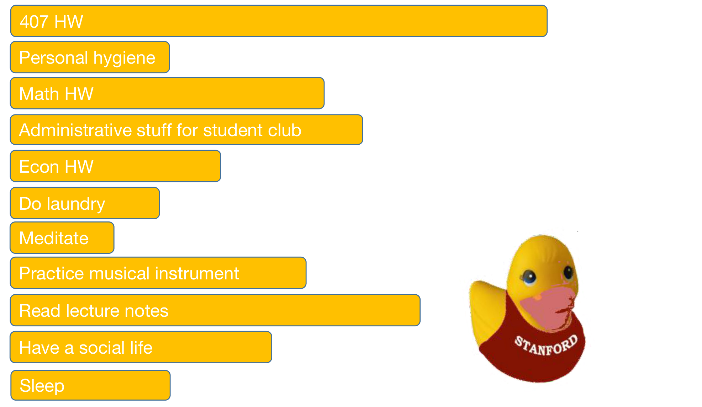
해야 할 일이 잔뜩 쌓여 있고, 일마다 걸리는 시간도, 미뤘을 때의 부담도 다릅니다. 슬라이드는 이 상황을 다음 문제로 정리합니다.
- 작업이 \(n\)개 있습니다.
- 작업 \(i\)를 하는 데 \(t_i\)시간이 걸립니다.
- 작업 \(i\)가 끝날 때까지 한 시간이 지날 때마다 \(c_i\)를 냅니다.
작업들을 한 줄로 차례로 할 때, 작업 \(i\)가 끝나는 시각을 \(C_i\)라 하면 작업 \(i\) 때문에 내는 비용은 \(c_i C_i\)입니다. 목표는 총비용을 최소로 만드는 순서를 찾는 것입니다.
\[ \mathrm{cost} = \sum_{i=1}^{n} c_i \, C_i \]
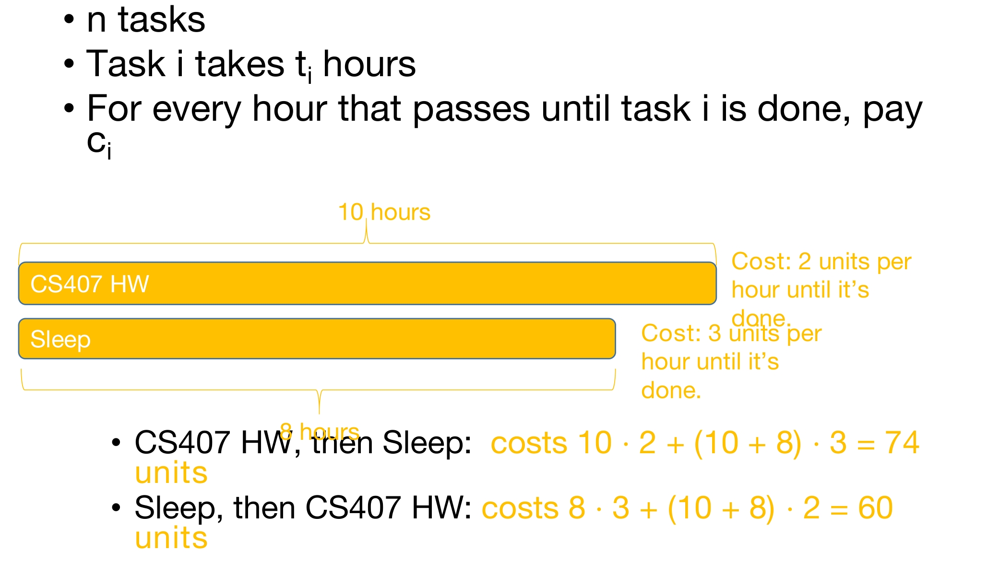
슬라이드의 예로 비용을 계산해 보겠습니다. CS407 과제는 10시간이 걸리고 시간당 2단위, 잠은 8시간이 걸리고 시간당 3단위입니다.
| 순서 | 과제가 끝나는 시각 | 잠이 끝나는 시각 | 총비용 |
|---|---|---|---|
| 과제 → 잠 | 10 | 18 | \(10 \cdot 2 + (10 + 8) \cdot 3 = 74\) |
| 잠 → 과제 | 18 | 8 | \(8 \cdot 3 + (10 + 8) \cdot 2 = 60\) |
잠을 먼저 자는 편이 14단위 쌉니다. 먼저 하는 작업의 끝나는 시각은 자기 소요 시간뿐이지만, 나중 작업은 앞 작업의 시간까지 기다려야 하므로 그동안의 비용이 쌓이기 때문입니다.
5.2 최적 부분 구조 (Optimal Substructure)
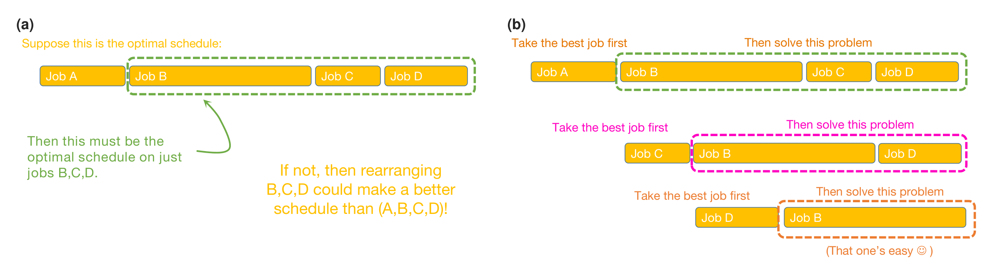
- 이 문제는 부분 문제로 깔끔하게 나뉩니다. (A, B, C, D)가 최적 일정이라고 합시다.
- 그러면 (B, C, D)는 작업 B, C, D만의 최적 일정이어야 합니다.
- 왜일까요? 그렇지 않다면 B, C, D를 재배열해 (A, B, C, D)보다 나은 일정을 만들 수 있기 때문입니다!
이 논증이 성립하는 이유를 식으로 확인하겠습니다. A를 먼저 하고 나머지 작업 집합 \(R\)을 순서 \(\pi\)로 한다고 합시다. \(R\)의 작업 \(X\)가 \(R\)만 따로 시각 0부터 할 때 끝나는 시각을 \(C'_X\)라 하면, 실제로는 A가 끝난 \(t_A\) 뒤에 시작하므로 \(X\)는 \(t_A + C'_X\)에 끝납니다.
\[ \begin{aligned} \mathrm{cost}(A, \pi) &= c_A t_A + \sum_{X \in R} c_X \,(t_A + C'_X) \\ &= \Bigl(c_A t_A + t_A \sum_{X \in R} c_X\Bigr) + \mathrm{cost}_R(\pi) \end{aligned} \]
여기서 \(\mathrm{cost}_R(\pi) = \sum_{X \in R} c_X C'_X\)는 \(R\)만의 일정 \(\pi\)의 비용입니다. 괄호 안의 항은 \(\pi\)와 무관하므로, A를 먼저 하는 일정들 가운데 가장 좋은 것은 \(\mathrm{cost}_R(\pi)\)를 최소로 만드는 \(\pi\), 곧 \(R\)만의 최적 일정을 쓴 것입니다.
그렇다면 탐욕 알고리즘에 잘 맞아 보입니다.
- 가장 좋은 작업을 먼저 하고, 그다음 남은 작업들의 문제를 풉니다.
- 남은 문제에서도 다시 가장 좋은 작업을 먼저 하고, 또 남은 문제를 풉니다.
- 작업이 하나 남으면 그 문제는 쉽습니다.
각 문제가 “남은 작업들”이라는 부분 문제 하나에만 의존하는 사슬 구조입니다. 남은 질문은 “가장 좋은” 작업이 무엇이냐입니다.
5.3 “가장 좋은”이란 무엇일까요 (What Does “Best” Mean?)
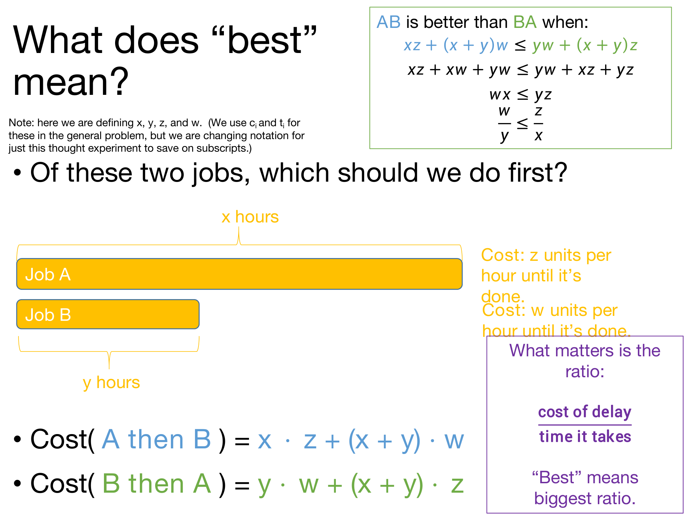
두 작업 가운데 무엇을 먼저 해야 할까요? 슬라이드는 이 사고 실험에서만 첨자를 줄이려고 기호를 바꿉니다.
- 작업 A: \(x\)시간이 걸리고, 끝날 때까지 시간당 \(z\)를 냅니다.
- 작업 B: \(y\)시간이 걸리고, 끝날 때까지 시간당 \(w\)를 냅니다.
두 순서의 비용은 다음과 같습니다. 먼저 하는 작업은 자기 시간에, 나중 작업은 두 시간의 합 \(x + y\)에 끝납니다.
\[ \begin{aligned} \mathrm{Cost}(A \text{ then } B) &= x \cdot z + (x + y) \cdot w \\ \mathrm{Cost}(B \text{ then } A) &= y \cdot w + (x + y) \cdot z \end{aligned} \]
AB가 BA보다 나을(적어도 같을) 조건을 정리하면, 양변에 공통인 \(xz\)와 \(yw\)가 지워집니다.
\[ \begin{aligned} xz + (x + y)w \le yw + (x + y)z &\iff xz + xw + yw \le yw + xz + yz \\ &\iff wx \le yz \\ &\iff \frac{w}{y} \le \frac{z}{x} \end{aligned} \]
마지막 단계는 양변을 양수 \(xy\)로 나눈 것입니다.
중요한 것은 비율입니다.
\[ r = \frac{\text{cost of delay}}{\text{time it takes}} = \frac{c_i}{t_i} \]
두 작업 가운데 이 비율이 큰 작업을 먼저 하는 것이 낫거나 같습니다. 따라서 “가장 좋은” 작업은 비율이 가장 큰 작업입니다.
5.1의 예로 확인하면, 과제는 \(2/10 = 0.2\), 잠은 \(3/8 = 0.375\)이므로 잠을 먼저 자야 하고, 실제로 60이 74보다 작았습니다. 두 비용의 차이도 식과 맞습니다. 과제를 A(\(x = 10\), \(z = 2\)), 잠을 B(\(y = 8\), \(w = 3\))로 두면 \(\mathrm{Cost}(AB) - \mathrm{Cost}(BA) = xw - yz = 30 - 16 = 14\)입니다.
5.4 탐욕 알고리즘의 아이디어 (Idea for Greedy Algorithm)
- 지연 비용/소요 시간 비율이 가장 큰 작업을 고릅니다.
5.2의 사슬 구조와 합치면, 비율이 가장 큰 작업을 먼저 하고 남은 작업들에서 또 비율이 가장 큰 작업을 하는 일을 되풀이하는 알고리즘이 됩니다. 이것이 옳은지는 4.10의 틀대로 증명합니다.
5.5 보조정리: 이 탐욕적 선택은 성공을 배제하지 않습니다 (Lemma: This Greedy Choice Doesn’t Rule Out Success)
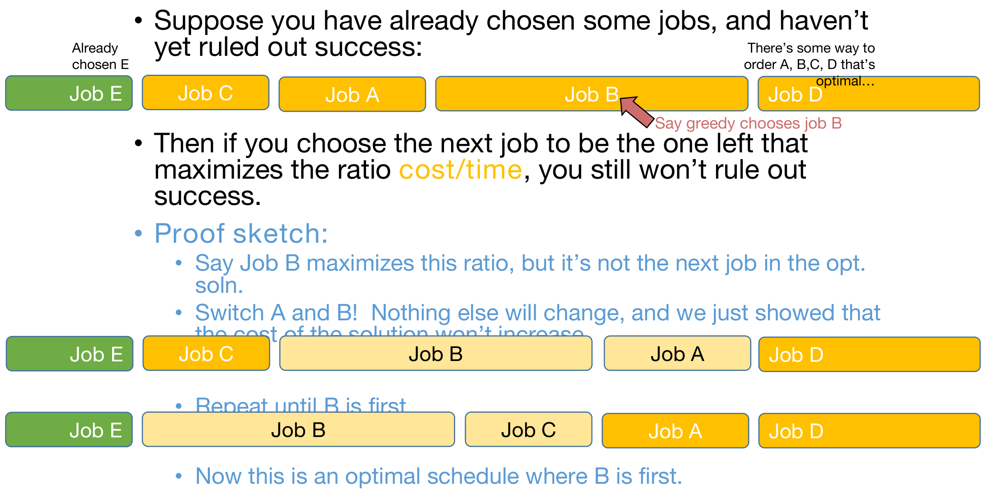
보조정리. 이미 몇 작업을 골랐고 아직 성공을 배제하지 않았다고 합시다. 그때 남은 작업 가운데 비용/시간 비율을 최대로 하는 작업을 다음 작업으로 고르면, 여전히 성공을 배제하지 않습니다.
슬라이드의 예에서는 작업 E를 이미 골랐고, 남은 A, B, C, D를 C, A, B, D 순서로 하는 것이 최적이라고 합시다. 탐욕 알고리즘은 비율이 가장 큰 B를 고릅니다. 슬라이드는 묻습니다. 위의 최적해를 어떻게 조작해야 E 다음에 B를 고르는 최적해를 만들 수 있을까요?
증명 스케치.
- B가 비율을 최대로 하지만, 최적해에서 다음 작업이 아니라고 합시다.
- A와 B를 맞바꿉니다! 다른 것은 아무것도 바뀌지 않고, 5.3에서 보였듯이 해의 비용은 늘지 않습니다.
- B가 맨 앞에 올 때까지 반복합니다. E, C, A, B, D → E, C, B, A, D → E, B, C, A, D.
- 이제 이것은 B가 맨 앞인 최적 일정입니다.
“다른 것은 아무것도 바뀌지 않는다”는 말에는 확인할 점이 있습니다. 5.3은 두 작업만 있을 때, 곧 둘이 시각 0에 시작할 때의 비교였습니다. 이웃한 두 작업이 시각 \(\tau\)에 시작한다면 비용은 다음과 같습니다.
\[ \begin{aligned} \mathrm{Cost}_\tau(A \text{ then } B) &= (\tau + x)z + (\tau + x + y)w \\ &= \tau(z + w) + xz + (x + y)w \\ \mathrm{Cost}_\tau(B \text{ then } A) &= (\tau + y)w + (\tau + x + y)z \\ &= \tau(z + w) + yw + (x + y)z \end{aligned} \]
- 두 순서 모두 \(\tau(z + w)\)가 똑같이 붙으므로, 비교 결과는 \(\tau = 0\)일 때와 같습니다.
- 두 작업 앞의 작업들은 끝나는 시각이 그대로입니다.
- 두 작업 뒤의 작업들도 두 작업이 차지하는 시간 \(x + y\)가 같으므로 끝나는 시각이 그대로입니다.
따라서 B를 바로 앞의 작업과 맞바꿀 때 비용의 변화는 그 두 작업에서만 생기고, B의 비율이 남은 작업 가운데 최대이므로 비용은 늘지 않습니다. 원래 일정이 최적이었으므로 비용이 줄 수도 없고, 결국 맞바꾼 일정도 최적입니다.
5.6 정당성 증명의 틀로 돌아가기 (Back to Our Framework for Proving Correctness of Greedy Algorithms)
슬라이드는 4.10의 틀을 그대로 다시 보여 주고, 귀납 단계 옆에 파란 화살표로 “방금 귀납 단계를 했습니다!(Just did the inductive step!)”, 오른쪽에 “나머지는 직접 채워 보세요!(Fill in the details!)”라고 적습니다.
- 귀납 가정: 탐욕적 선택 \(t\) 이후에도 성공을 배제하지 않았습니다.
- 기저 사례: 아무 선택도 하기 전에는 성공이 가능합니다.
- 귀납 단계: 선택 \(t\) 이후 성공을 배제하지 않았다면, 선택 \(t+1\) 이후에도 배제하지 않습니다. 5.5의 보조정리입니다.
- 결론: 알고리즘의 끝에 도달했는데 성공을 배제하지 않았다면, 성공한 것입니다.
5.7 탐욕 스케줄링 해법 (Greedy Scheduling Solution)
scheduleJobs( JOBS ):
# 비율 r_i = c_i / t_i
# = (cost of delaying job i) / (time job i takes to complete)
Sort JOBS in decreasing order by the ratio r_i
Return JOBS- 수행 시간: \(O(n \log n)\). 비율을 계산하는 데 \(O(n)\), 정렬하는 데 \(O(n \log n)\)이 듭니다.
- 5.1의 예에 적용하면 잠(0.375), 과제(0.2) 순서이고, 비용은 최소인 60입니다.
슬라이드는 이렇게 덧붙입니다. “이제 최적의 방식으로 평화롭게 일정을 소화할 수 있습니다.”
5.8 귀납법으로 엄밀하게 (Formally, Use Induction!)
정렬된 작업 목록을 sorted_JOBS라 하고 파이썬 식으로 앞의 \(t\)개를 sorted_JOBS[:t]라 쓰면, 슬라이드의 귀납법은 다음과 같습니다.
- 귀납 가정: 처음 \(t\)개 작업이
sorted_JOBS[:t]인 최적 순서가 있습니다. - 기저 사례: \(t = 0\)이면 이 문장은 “처음 0개 작업이
[]인 최적 순서가 있다”가 됩니다. 참입니다. - 귀납 단계: 결국 다음을 보이는 문제로 귀결됩니다.
sorted_JOBS[t:]위의 최적 순서 가운데sorted_JOBS[t]가 맨 앞인 것이 있습니다. 이것은 5.5의 보조정리에서 나옵니다. - 결론: \(t = n\)이면 이 문장은 “처음 \(n\)개 작업이
sorted_JOBS인 최적 순서가 있다”가 됩니다. 곧 우리가 반환한 것이 최적 순서입니다.
귀납 단계가 “결국 귀결된다(boils down to)”는 말은 5.2의 최적 부분 구조 덕분입니다. 처음 \(t\)개가 sorted_JOBS[:t]인 최적 순서에서 뒤쪽 순서는 남은 작업 sorted_JOBS[t:]만의 최적 순서여야 합니다. 보조정리에 따라 그 뒤쪽을 sorted_JOBS[t]가 맨 앞인 최적 순서로 바꿔도 전체 비용은 그대로이므로, 처음 \(t + 1\)개가 sorted_JOBS[:t+1]인 최적 순서가 생깁니다.
5.9 무엇을 배웠나 (What Have We Learned?)
- 탐욕 알고리즘이 스케줄링에 통합니다.
- 이 예제는 앞의 예제와 같은 개요를 따랐습니다.
- 최적 부분 구조를 찾습니다. (A를 먼저 한 뒤의 B, C, D는 그들만의 최적 일정)
- 최적해를 배제하지 않는 선택 방법을 찾습니다. 비용/시간 비율이 가장 큰 작업부터 합니다.
6. 허프만 부호화 (One More Example: Huffman Coding)
6.1 아스키는 낭비가 큽니다 (ASCII Is Wasteful)
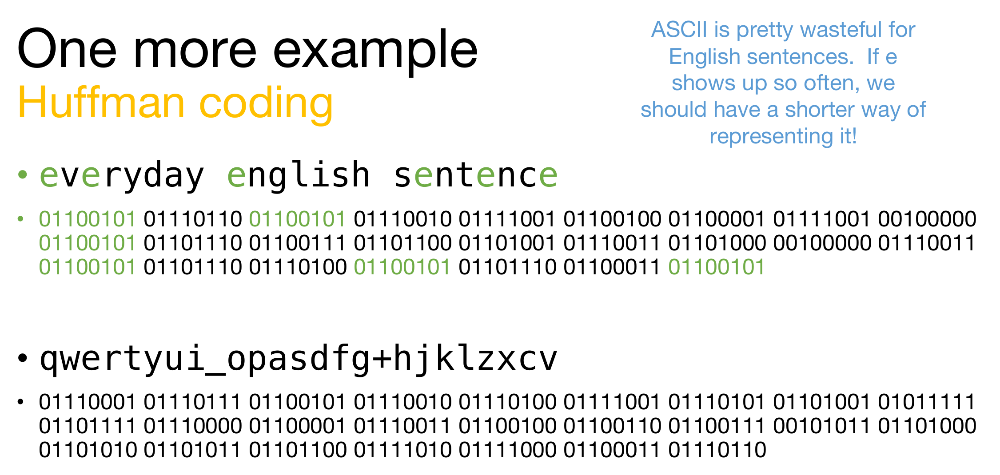
슬라이드는 두 문자열을 아스키로 적어 비교합니다.
everyday english sentence: 25글자, 아스키로 \(25 \times 8 = 200\)비트.qwertyui_opasdfg+hjklzxcv: 역시 25글자, 200비트.
첫 문장은 평범한 영어이고 둘째는 자판의 글자 줄을 따라 친 의미 없는 문자열인데, 아스키로는 똑같이 200비트가 듭니다. 아스키는 모든 글자에 8비트를 주므로 어떤 글자가 얼마나 자주 나오는지를 전혀 이용하지 않습니다. 첫 문장에서는 e가 여섯 번 나오고, 그때마다 01100101 8비트를 씁니다. 슬라이드의 메모대로 아스키는 영어 문장에는 꽤 낭비가 큽니다. e가 그렇게 자주 나온다면, 더 짧게 나타내는 방법이 있어야 합니다!
6.2 문자의 분포 (Suppose We Have Some Distribution on Characters)
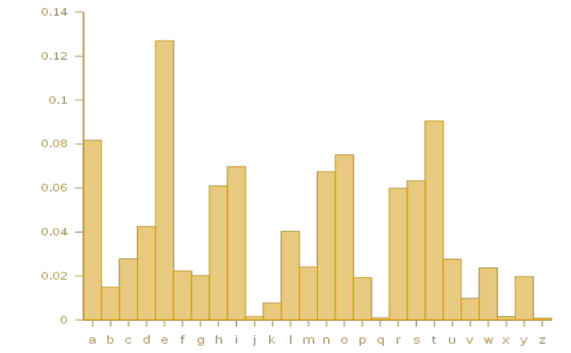
실제 영어에서는 글자의 빈도가 고르지 않습니다. 슬라이드는 단순하게 하려고 다음과 같이 지어낸 예를 씁니다.
| 글자 | A | B | C | D | E | F |
|---|---|---|---|---|---|---|
| 빈도(%) | 45 | 13 | 12 | 16 | 9 | 5 |
빈도의 합은 100이므로, 각 값을 그 글자가 나올 확률(%)로 읽을 수 있습니다. 이 빈도표는 CLRS의 허프만 부호 예제와 같은 수치입니다. 질문은 이 글자들을 가능한 한 효율적으로 부호화하는 방법입니다.
6.3 시도 0과 시도 1 (Try 0 and Try 1)
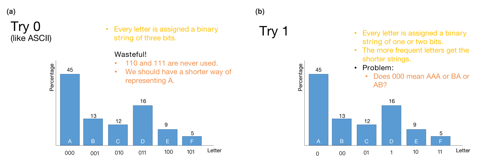
시도 0 (아스키와 같은 방식)
- 모든 글자에 3비트 이진 문자열을 줍니다. A 000, B 001, C 010, D 011, E 100, F 101.
- 낭비입니다!
- 110과 111은 쓰이지 않습니다.
- 가장 흔한 A를 더 짧게 나타낼 방법이 있어야 합니다.
시도 1
- 모든 글자에 1비트나 2비트 이진 문자열을 줍니다.
- 더 자주 나오는 글자에 더 짧은 문자열을 줍니다. A 0, B 00, C 01, D 1, E 10, F 11.
- 문제: 000은 AAA일까요, BA일까요, AB일까요?
시도 1은 길이만 보면 글자당 기대 비트 수가 \(0.45 + 0.16 + 2 \times 0.39 = 1.39\)로 매우 짧습니다. 하지만 비트열을 글자로 되돌리는 방법이 하나로 정해지지 않으므로 쓸 수 없습니다. 실제로 000은 정확히 세 가지(AAA, AB, BA)로 읽힙니다. 부호는 짧아야 할 뿐 아니라 해독이 모호하지 않아야 합니다.
6.4 시도 2: 접두사 없는 부호 (Try 2: Prefix-free Coding)
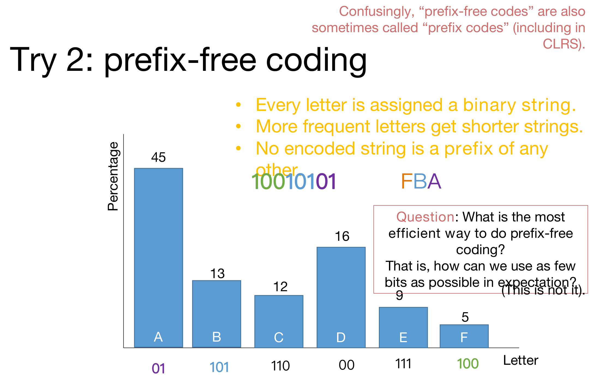
접두사 없는 부호(prefix-free code)는 다음을 만족하는 부호입니다.
- 모든 글자에 이진 문자열을 줍니다.
- 더 자주 나오는 글자에 더 짧은 문자열을 줍니다.
- 어떤 부호도 다른 부호의 접두사(prefix)가 아닙니다.
슬라이드의 예는 A 01, B 101, C 110, D 00, E 111, F 100입니다.
세 번째 조건이 모호함을 없앱니다. 비트열을 앞에서부터 읽다가 지금까지 읽은 비트가 어떤 부호와 같아지면, 그것보다 긴 다른 부호가 이 비트들로 시작할 수 없으므로 그 글자로 확정해도 됩니다. 슬라이드의 비트열 10010101을 해독해 보겠습니다.
| 읽은 비트 | 부호와 일치? | 결과 |
|---|---|---|
| 1, 10 | 아직 없음 | |
| 100 | F | F |
| 1, 10 | 아직 없음 | |
| 101 | B | B |
| 0 | 아직 없음 | |
| 01 | A | A |
결과는 FBA이며, 다른 방식으로 읽을 여지가 없습니다.
슬라이드의 붉은 상자는 다음 질문을 던집니다. 접두사 없는 부호를 가장 효율적으로 만드는 방법, 곧 기대 비트 수를 가능한 한 적게 쓰는 방법은 무엇일까요? 그리고 덧붙입니다. (이 부호가 그 답은 아닙니다.) 이 부호의 기대 길이는 A와 D가 2비트, 나머지가 3비트이므로 \(2(0.45 + 0.16) + 3(0.13 + 0.12 + 0.09 + 0.05) = 2.39\)비트입니다.
슬라이드의 붉은 메모대로, 헷갈리게도 접두사 없는 부호(prefix-free codes)를 접두 부호(prefix codes)라고 부르기도 하며, CLRS도 그렇게 부릅니다. 이름에 “접두”가 들어 있어 접두사를 허용하는 부호처럼 들리지만, 실제 뜻은 어떤 부호도 다른 부호의 접두사가 아닌 부호입니다.
6.5 접두사 없는 부호는 트리입니다 (A Prefix-free Code Is a Tree)
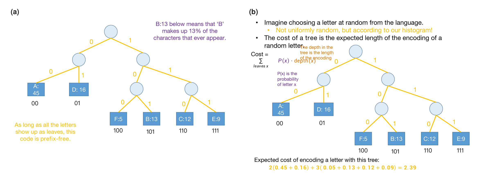
접두사 없는 부호는 이진 트리로 그릴 수 있습니다.
- 각 안쪽 노드에서 왼쪽 간선에 0, 오른쪽 간선에 1을 붙입니다.
- 글자는 잎(leaf)에 둡니다. 뿌리에서 그 잎까지 간선의 숫자를 이어 읽은 것이 그 글자의 부호입니다.
- 슬라이드의 트리에서 A:45는 00, D:16은 01, F:5는 100, B:13은 101, C:12는 110, E:9는 111입니다. 여기서 B:13은 전체 글자의 13%가 B라는 뜻입니다.
모든 글자가 잎에 있기만 하면, 이 부호는 접두사 없는 부호입니다. 한 부호가 다른 부호의 접두사라는 것은 트리에서 앞 글자의 노드가 뒤 글자의 노드의 조상이라는 뜻인데, 잎은 누구의 조상도 아니기 때문입니다. 거꾸로 접두사 없는 부호가 주어지면 부호들을 뿌리에서부터의 경로로 그려 이런 트리를 만들 수 있으므로, 접두사 없는 부호를 고르는 문제는 트리를 고르는 문제와 같습니다.
6.6 트리는 얼마나 좋을까요 (How Good Is a Tree?)
- 언어에서 글자 하나를 무작위로 뽑는다고 상상합시다.
- 균등하게가 아니라, 히스토그램을 따라 뽑습니다!
- 트리의 비용은 무작위로 뽑은 글자의 부호 길이의 기댓값입니다.
트리에서 잎의 깊이가 곧 부호의 길이이므로, 비용은 다음과 같습니다.
\[ \mathrm{cost}(\text{tree}) = \sum_{\text{leaves } x} P(x) \cdot \mathrm{depth}(x) \]
- \(P(x)\)는 글자 \(x\)의 확률입니다.
- \(\mathrm{depth}(x)\)는 트리에서 \(x\)의 깊이, 곧 \(x\)의 부호 길이입니다.
슬라이드의 트리에서는 A, D가 깊이 2, 나머지 넷이 깊이 3이므로
\[ 2(0.45 + 0.16) + 3(0.05 + 0.13 + 0.12 + 0.09) = 1.22 + 1.17 = 2.39 \]
입니다. 글자당 평균 2.39비트로, 시도 0의 3비트보다 짧습니다.
질문. 글자 위의 분포 \(P\)가 주어졌을 때, \(\mathrm{cost}(\text{tree})\)가 가장 작은 트리를 찾으세요.
6.7 탐욕 알고리즘 (Greedy Algorithm)
- 부분 트리를 아래에서부터 탐욕적으로 쌓습니다(greedily build sub-trees from the bottom up).
- 탐욕적 목표: 덜 자주 나오는 글자일수록 트리의 더 아래쪽에 있어야 합니다.
비용 \(\sum P(x) \cdot \mathrm{depth}(x)\)에서 깊이가 깊은 자리에는 확률이 작은 글자가 와야 곱이 작아집니다. 그래서 가장 드문 글자들부터 묶어 가장 아래층을 만들고, 위로 쌓아 올립니다.
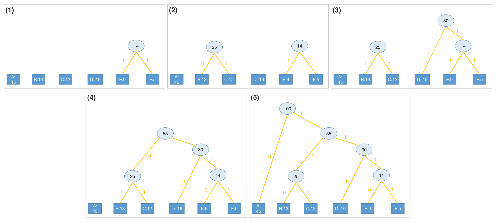
풀이: 드문 글자부터 시작해 부분 트리를 탐욕적으로 쌓습니다. 매 단계에서 지금 있는 노드 가운데 빈도가 가장 작은 둘을 합쳐, 두 빈도의 합을 가진 새 노드를 만듭니다.
| 장면 | 합치기 전 노드들의 빈도 | 가장 작은 둘 | 새 노드 |
|---|---|---|---|
| (1) | 45, 13, 12, 16, 9, 5 | E:9, F:5 | 14 |
| (2) | 45, 13, 12, 16, 14 | B:13, C:12 | 25 |
| (3) | 45, 16, 14, 25 | D:16, 14 | 30 |
| (4) | 45, 25, 30 | 25, 30 | 55 |
| (5) | 45, 55 | A:45, 55 | 100 |
노드가 하나 남으면 그것이 뿌리이고, 트리가 완성됩니다.
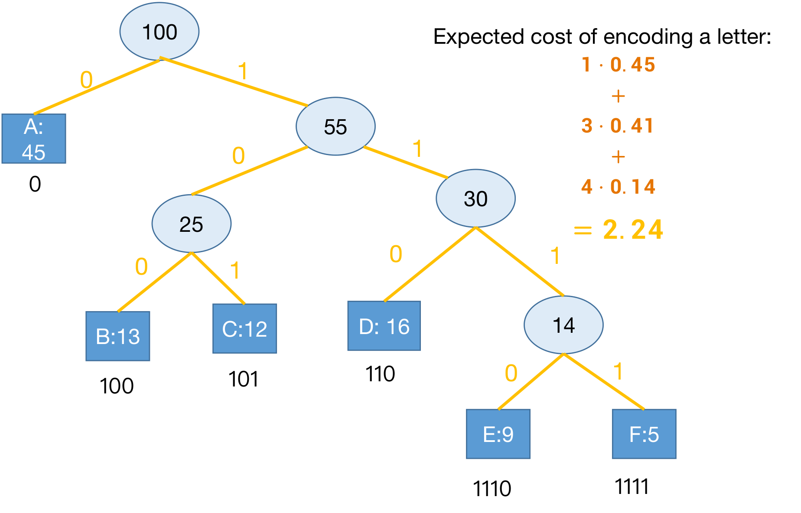
완성된 트리의 부호와 기대 길이는 다음과 같습니다.
| 글자 | A | B | C | D | E | F |
|---|---|---|---|---|---|---|
| 빈도(%) | 45 | 13 | 12 | 16 | 9 | 5 |
| 부호 | 0 | 100 | 101 | 110 | 1110 | 1111 |
| 길이 | 1 | 3 | 3 | 3 | 4 | 4 |
\[ \begin{aligned} &1 \cdot 0.45 + 3 \cdot (0.13 + 0.12 + 0.16) + 4 \cdot (0.09 + 0.05) \\ &= 0.45 + 1.23 + 0.56 = 2.24 \end{aligned} \]
글자당 평균 2.24비트로, 고정 길이 부호(3비트)보다 약 25% 짧고 시도 2의 접두사 없는 부호(2.39비트)보다도 짧습니다. 100글자로 치면 300비트가 224비트로 줄어듭니다. 이 포스트에서 여섯 글자의 잎 깊이로 가능한 모든 조합을 컴퓨터로 따져 보아도 2.24보다 작은 비용은 나오지 않았습니다.
6.8 정확히 어떤 알고리즘이었나요 (What Exactly Was the Algorithm?)
이것을 허프만 부호화(Huffman coding)라고 부릅니다.
Create a node like [D: 16] for each letter/frequency
# The key is the frequency (16 in this case)
Let CURRENT be the list of all these nodes.
while len(CURRENT) > 1:
# 키(빈도)가 가장 작은 두 노드
X and Y ← the nodes in CURRENT with the smallest keys.
# 두 빈도의 합을 키로 하는 새 부모
Create a new node Z with Z.key = X.key + Y.key
Set Z.left = X, Z.right = Y
Add Z to CURRENT and remove X and Y
return CURRENT[0]- 노드의 키(key)는 빈도입니다. 예를 들어 노드 D:16의 키는 16입니다.
- 반복할 때마다 노드가 하나씩 줄어들므로, 글자가 \(n\)개이면 합치기는 정확히 \(n - 1\)번 일어납니다.
- 슬라이드는 수행 시간을 따로 적지 않았습니다.
CURRENT를 최소 힙(min-heap) 같은 우선순위 큐로 두면 반복마다 가장 작은 둘을 꺼내고 새 노드를 넣는 일이 \(O(\log n)\)이므로, 전체는 \(O(n \log n)\)입니다. - 슬라이드 93의 그림은 첫 합치기에서 F:5를 \(X\)(왼쪽, 0), E:9를 \(Y\)(오른쪽, 1)로 놓아, E를 0쪽에 둔 슬라이드 87과 좌우가 바뀌어 있습니다. 두 자식 중 어느 쪽에 0을 붙이든 깊이는 같으므로 비용에는 영향이 없습니다.
6.9 정말 통할까요 (Does It Work?)
- 네.
- 여기서는 증명을 스케치합니다.
- 같은 전략입니다. 매 단계에서 우리가 하는 선택이 최적해를 배제하지 않는다는 것을 보입니다.
\(x\)와 \(y\)가 가장 덜 자주 나오는 두 글자라고 합시다. 그러면 \(x\)와 \(y\)가 형제(sibling)인 최적 트리가 있습니다.
허프만 알고리즘의 첫 단계는 정확히 가장 드문 두 글자를 형제로 묶는 일이므로, 이 보조정리가 첫 선택이 최적해를 배제하지 않음을 보장합니다.
6.10 보조정리의 증명 아이디어 (Lemma: Proof Idea)
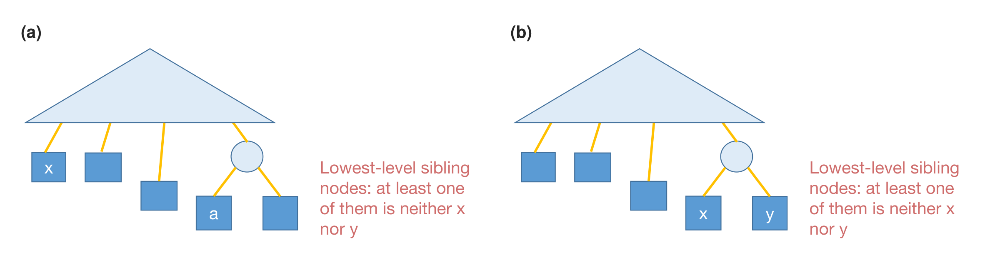
- 최적 트리가 그림 (a)처럼 생겼다고 합시다.
- 가장 낮은 층의 형제 노드(lowest-level sibling nodes)를 봅니다. 그 가운데 적어도 하나는 \(x\)도 \(y\)도 아닙니다(둘 다 \(x\), \(y\)라면 이미 증명이 끝난 것입니다). 그것을 \(a\)라 합시다.
- \(x\)와 \(a\)를 맞바꾸면 비용은 어떻게 될까요?
- 비용은 늘 수 없습니다. \(a\)가 \(x\)보다 자주 나오는데, \(a\)의 부호는 짧아지고 \(x\)의 부호는 길어졌기 때문입니다.
- 이 논리를 \(x\)와 \(y\)가 형제인 최적 트리를 얻을 때까지 반복합니다.
- 비용은 한 번도 늘지 않았으므로 이 트리는 여전히 최적입니다.
“비용이 늘 수 없다”를 식으로 확인하겠습니다. \(d(\cdot)\)를 깊이라 하면, 맞바꾸기 전후에 바뀌는 항은 \(x\)와 \(a\)의 두 항뿐입니다.
\[ \begin{aligned} \Delta &= \bigl[P(x)\,d(a) + P(a)\,d(x)\bigr] - \bigl[P(x)\,d(x) + P(a)\,d(a)\bigr] \\ &= -\bigl(P(a) - P(x)\bigr)\bigl(d(a) - d(x)\bigr) \;\le\; 0 \end{aligned} \]
- \(x\)가 가장 드문 글자이므로 \(P(a) - P(x) \ge 0\)입니다.
- \(a\)가 가장 깊은 층에 있으므로 \(d(a) - d(x) \ge 0\)입니다.
- 두 양수의 곱에 음의 부호가 붙으므로 \(\Delta \le 0\), 곧 비용이 늘지 않습니다.
\(y\)도 같은 방식으로 \(x\)의 형제 자리에 있는 잎 \(b\)와 맞바꿉니다. \(b\)는 \(x\)가 아니므로 \(P(b) \ge P(y)\)이고, \(b\)도 가장 깊은 층에 있으므로 같은 계산이 성립합니다.
증명에는 숨은 사실이 하나 쓰였습니다. 가장 깊은 잎에는 형제가 있어야 합니다. 최적 트리에서는 모든 안쪽 노드가 자식을 둘씩 가집니다. 자식이 하나뿐인 노드가 있다면 그 노드를 없애고 자식을 한 칸 끌어올려 그 아래 잎들의 깊이를 줄일 수 있기 때문입니다. 그러면 가장 깊은 잎의 형제는 같은 깊이에 있고, 그보다 깊은 노드가 없으니 그 형제도 잎입니다.
6.11 허프만 부호화가 통하는 이유 (Huffman Coding Works: Idea)
- 매 단계에서 우리가 하는 선택이 최적해를 배제하지 않는다는 것을 보입니다.
- 보조정리: \(x\)와 \(y\)가 가장 드문 두 글자라면, \(x\)와 \(y\)가 형제인 최적 트리가 있습니다.
- 이것만으로도 첫 단계에서 최적성을 배제하지 않는다는 것은 충분히 보일 수 있습니다.
- 그런데 무엇인가를 묶기 시작한 뒤에도 계속 최적성을 배제하지 않는다는 것은 어떻게 보일까요?
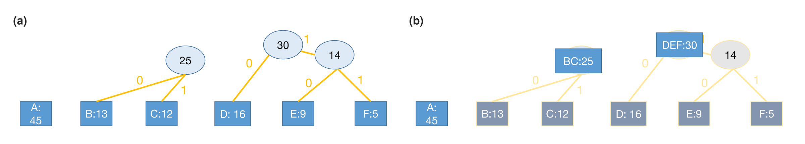
- 기본 아이디어는 “묶음”을 새 알파벳의 잎으로 취급할 수 있다는 것입니다. 세 번 합친 뒤라면 알파벳을 A:45, BC:25, DEF:30의 세 글자로 봅니다.
- 그러면 앞의 보조정리를 쓸 수 있습니다. 새 알파벳에서 가장 드문 두 글자 BC:25와 DEF:30이 형제인 최적 트리가 있으므로, 다음 합치기(55)도 최적해를 배제하지 않습니다.
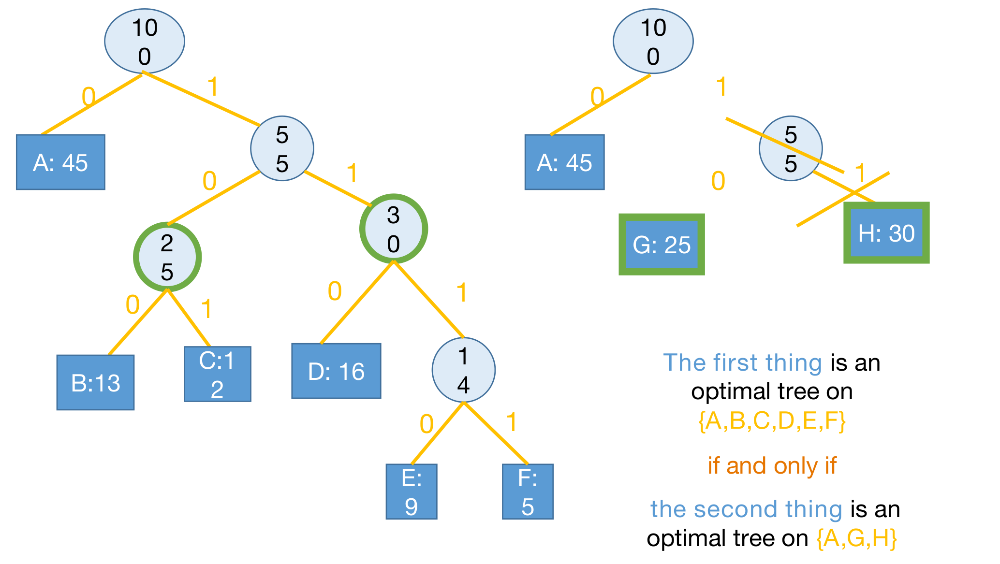
수업에서 건너뛴 102번째 슬라이드가 이 두 번째 요점의 기본 아이디어를 보여 줍니다. 안쪽 노드를 더 작은 알파벳 위의 어떤 트리의 “잎”으로 취급할 수 있습니다.
- 첫 번째 트리(왼쪽, 여섯 글자 A–F 위의 트리)가 A–F 위의 최적 트리일 필요충분조건은
- 두 번째 트리(오른쪽, 25와 30을 잎 G:25, H:30으로 바꾼 A, G, H 위의 트리)가 A, G, H 위의 최적 트리인 것입니다.
왜 그런지는 비용을 나눠 보면 보입니다. 큰 트리 \(T\)가 부분 트리 \(G\)(B, C)와 \(H\)(D, E, F)를 그대로 품고 있고, \(T'\)가 그 둘을 잎으로 바꾼 작은 트리라고 합시다. \(G\) 안의 글자 \(x\)의 깊이는 “\(T'\)에서 \(G\)의 깊이”에 “\(G\) 안에서 \(x\)의 깊이”를 더한 것입니다.
\[ \mathrm{depth}_T(x) = \mathrm{depth}_{T'}(G) + \mathrm{depth}_G(x) \qquad (x \in G) \]
이것을 비용에 넣고 \(P(G) = \sum_{x \in G} P(x)\)로 두면 다음을 얻습니다(\(H\)도 같습니다).
\[ \mathrm{cost}(T) = \mathrm{cost}(T') + \sum_{x \in G} P(x)\,\mathrm{depth}_G(x) + \sum_{x \in H} P(x)\,\mathrm{depth}_H(x) \]
뒤의 두 합은 이미 만든 부분 트리 안에서 정해지는 상수이므로, \(G\)와 \(H\)를 그대로 품는 트리들 가운데서는 \(\mathrm{cost}(T)\)를 줄이는 것과 \(\mathrm{cost}(T')\)를 줄이는 것이 같은 일입니다. 슬라이드의 “필요충분조건”은 이 조건 아래에서의 말입니다. 예제의 숫자로 맞춰 보면 다음과 같습니다.
| 항 | 계산 | 값 |
|---|---|---|
| \(\mathrm{cost}(T')\) | \(0.45 \cdot 1 + 0.25 \cdot 2 + 0.30 \cdot 2\) | 1.55 |
| \(G\) 안쪽 | \(0.13 \cdot 1 + 0.12 \cdot 1\) | 0.25 |
| \(H\) 안쪽 | \(0.16 \cdot 1 + 0.09 \cdot 2 + 0.05 \cdot 2\) | 0.44 |
| 합계 | 2.24 |
합계가 6.7에서 구한 허프만 트리의 비용과 같습니다. 이렇게 합칠 때마다 문제가 한 글자 작은 알파벳의 같은 문제로 줄어들고, 줄어든 문제에서 다시 보조정리를 쓰는 것이 귀납 단계입니다.
완전한 증명은 강의 노트나 CLRS를 보세요!
6.12 무엇을 배웠나 (What Have We Learned?)
- 영어 글자의 분포는 균등하지 않으므로, 아스키는 영어를 부호화하는 최적의 방법이 아닙니다. (별표: 비트 수만 신경 쓴다면.)
- 허프만 부호화가 최적의 방법입니다!
- 어떤 언어에 대해서든 최적의 방식을 효율적으로 찾으려면 탐욕 알고리즘을 쓰면 됩니다.
- 탐욕 알고리즘을 떠올리려면
- 최적 부분 구조를 찾습니다. 슬라이드는 이 줄 옆에 작은 트리를 그리고, 그 한쪽 부분 트리를 주황 점선으로 감쌌습니다.
- 최적해를 배제하지 않는 선택 방법을 찾습니다. 지금 있는 부분 트리 가운데 가장 작은 둘로 새 부분 트리를 만듭니다.
7. 되짚어보기 (Recap)
7.1 되짚어보기 I (Recap I)
- 탐욕 알고리즘!
- 세 가지 예
- 활동 선택
- 작업 스케줄링
- 허프만 부호화 (시간이 되었다면)
7.2 되짚어보기 II (Recap II)
- 탐욕 알고리즘!
- 대개 적기는 쉽습니다.
- 하지만 떠올리기 어렵고, 정당화하기 어려울 수 있습니다.
- 자연스러운 탐욕 알고리즘이 늘 옳지는 않습니다. (무제한 배낭의 예)
- 다음 조건을 갖춘 문제는 탐욕 알고리즘의 좋은 후보입니다.
- 최적 부분 구조가 있고,
- 그 최적 부분 구조가 정말 좋습니다(REALLY NICE).
- 해가 다른 부분 문제 하나에만 의존합니다.
세 예를 한 표로 모으면 다음과 같습니다.
| 활동 선택 | 작업 스케줄링 | 허프만 부호화 | |
|---|---|---|---|
| 탐욕적 선택 | 가장 일찍 끝나는 활동 | \(c_i / t_i\)가 가장 큰 작업 | 빈도가 가장 작은 두 노드를 합침 |
| 남는 부분 문제 | 그 활동이 끝난 뒤의 활동들 | 남은 작업들의 순서 | 합친 노드를 한 글자로 본 더 작은 알파벳 |
| 바꿔 넣기 | \(T^*\)의 \(a_j\)를 \(a_k\)로 | 이웃한 두 작업을 맞바꿈 | 가장 깊은 형제 잎을 \(x\), \(y\)와 맞바꿈 |
| 수행 시간 | \(O(n \log n)\), 정렬되어 있으면 \(O(n)\) | \(O(n \log n)\) | 슬라이드에 없음(최소 힙으로 \(O(n \log n)\)) |
7.3 다음 시간 (Next Time)
- 최소 신장 트리(Minimum Spanning Tree)를 위한 탐욕 알고리즘!
- 다음 시간 전에: 연습 — 최소 신장 트리에 대해 생각해 보기.
정리하며 (Closing Remarks)
이번 강의의 논리 사슬을 단계별로 압축하면 다음과 같습니다.
| 단계 | 내용 | 근거 |
|---|---|---|
| ① 탐욕의 정의 | 한 번에 하나씩 고르고, 되돌아보지 않고, 그 결과가 전역 최적이기를 바란다 | Greedy algorithms |
| ② 반례 | 무제한 배낭에서 가치/무게 비율이 가장 큰 타코만 담으면 가치 39로 최적 42에 못 미친다. 자연스러운 탐욕도 틀릴 수 있다 | Non-example |
| ③ 활동 선택의 규칙 | 가장 짧은 것, 충돌이 가장 적은 것이 아니라 가장 일찍 끝나는 활동부터 고른다. 정렬되어 있으면 \(O(n)\), 아니면 \(O(n \log n)\) | 반례 그림, 일곱 활동 예제 |
| ④ 최적해를 배제하지 않음 | 지금까지의 선택을 확장하는 최적해 \(T^*\)에 다음 선택 \(a_k\)가 없으면, \(a_i\) 뒤에서 가장 일찍 끝나는 \(T^*\)의 활동 \(a_j\)를 \(a_k\)로 바꾼 \(T\)도 허용되고 크기가 같다 | We never rule out an optimal solution |
| ⑤ 귀납법 | 빈 해에서 출발해 ④를 귀납 단계로 쓰면, 끝났을 때 현재 해를 확장하는 해는 현재 해뿐이므로 현재 해가 최적이다 | So the algorithm is correct |
| ⑥ 흔한 증명 전략 | 성공을 배제하지 않음을 귀납법으로 보이고, 귀납 단계는 최적해를 탐욕적 선택과 일치하도록 조작해 보인다. 유일한 방법은 아니지만 자주 통한다 | One common strategy |
| ⑦ 부분 구조의 모양 | 분할 정복은 트리, 동적 계획법은 겹치는 그래프, 탐욕은 사슬이다. 탐욕이 통하는 문제에서는 각 문제가 부분 문제 하나에만 의존한다 | Sub-problem graph view |
| ⑧ 동적 계획법과의 관계 | \(A[i] = A[k] + 1\)을 하향식 동적 계획법으로 풀고 Next를 따라가면 탐욕 해와 같은 \(a_2, a_5, a_3, a_7\)이 나온다 | Greedy vs. DP |
| ⑨ 스케줄링의 비율 | 이웃한 두 작업을 비교하면 \(wx \le yz\)일 때 A를 먼저 하는 것이 낫다. 곧 \(c_i / t_i\)가 큰 작업을 먼저 한다 | What does “best” mean? |
| ⑩ 스케줄링의 정당성 | 비율이 최대인 작업을 바로 앞 작업과 거듭 맞바꿔도 비용이 늘지 않으므로, 비율 내림차순 정렬(\(O(n \log n)\))이 최적이다 | Lemma, 귀납법 |
| ⑪ 접두사 없는 부호 | 고정 길이(3비트)는 낭비이고, 길이만 줄이면 해독이 모호하다. 접두사 없는 부호는 잎에 글자를 둔 이진 트리이고 비용은 \(\sum P(x)\,\mathrm{depth}(x)\)이다 | Try 0–2, A prefix-free code is a tree |
| ⑫ 허프만 부호화 | 빈도가 가장 작은 두 노드를 거듭 합치면 예제에서 글자당 2.24비트를 얻는다(시도 2는 2.39비트) | Solution, Huffman coding |
| ⑬ 허프만의 정당성 | 가장 드문 두 글자를 형제로 둔 최적 트리가 있고, 합친 부분 트리를 새 글자로 보면 같은 보조정리를 되풀이해 쓸 수 있다 | Lemma, Basic idea for point 2 |
| ⑭ 탐욕이 통하는 조건 | 최적 부분 구조가 있고, 그 구조가 아주 좋아서 해가 다른 부분 문제 하나에만 의존할 때 | Recap II |